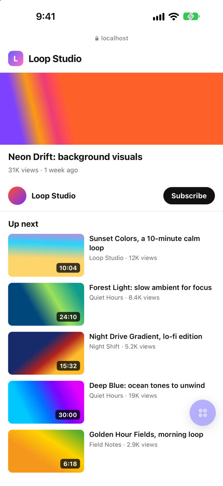
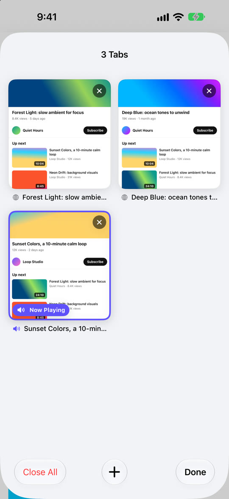
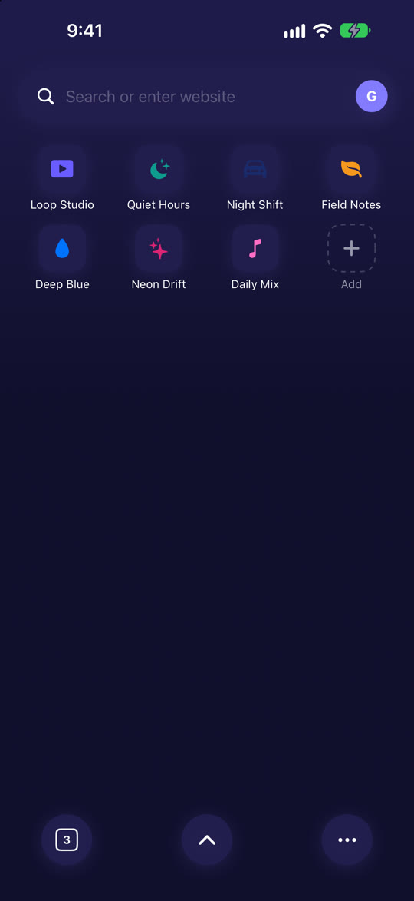

Video Flow is a calm video browser for iPhone and iPad. Your sites on one start page, tabs with previews, and one floating button for everything else.
Built for people who just want to press play.
A floating button over every page: Home, tabs, share, reload and more. Drag it anywhere; it fades away while you watch.
See every open page as a card. Swipe a card to close it, or tap to jump straight back.
Picture in picture and background audio. A Now Playing bar on the start page lets you pause or return in one tap.
Built-in content blocking trims page clutter, and the address bar slides away as you scroll.
Follow the channels you like and get a notification when they post something new.
Get the gist of a long video before you watch. Runs privately with Apple Intelligence on supported iPhones.
Site suggestions as you type, www. and .com keys, and Paste and Go for links you copied.
Fall asleep to a video that stops on its own, and set a playback speed that sticks.
Pin and reorder your favourite sites, continue where you left off, and open everything from the Home Screen.
Real screens from the app.



Video Flow is free with small ads. One subscription removes them.
iPhone and iPad with iOS 18 or later. AI summaries need a device that supports Apple Intelligence.
No. Followed channels are kept on your device, and new-video alerts work without an account.
Your history, bookmarks and followed channels stay on your device. AI summaries are made on your iPhone, not on a server. See the privacy policy.
Open Settings on your iPhone, tap your name, then Subscriptions, and choose Video Flow.